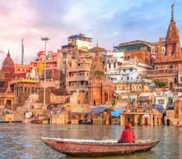
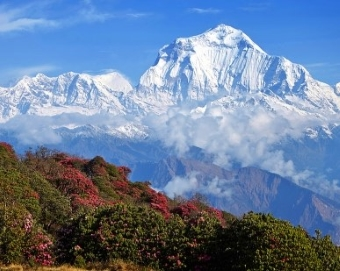
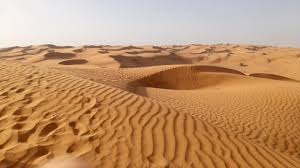
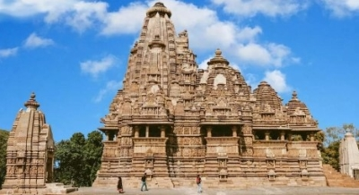
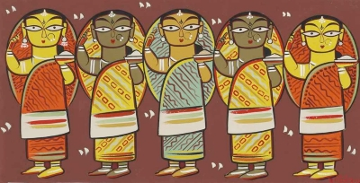
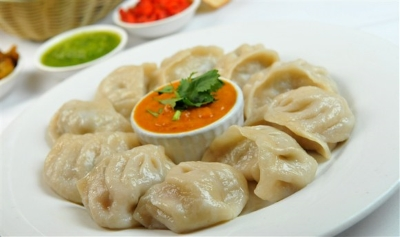
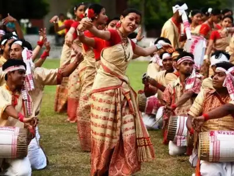
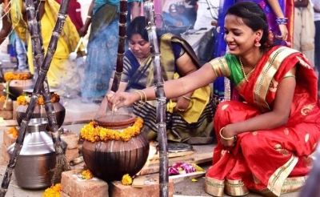

North India, with its diverse landscapes, languages, traditions, and cuisine, is a region that encapsulates the essence of India's cultural vibrancy. Spanning states like Punjab, Haryana, Uttar Pradesh, Rajasthan, Himachal Pradesh, and Jammu & Kashmir, North India is a treasure trove of history and heritage, and a stunning mosaic of diverse landscapes, encompassing everything from the majestic Himalayan mountain ranges to fertile plains, arid deserts, lush forests, and meandering rivers.
Culture
The diverse culture of North India had paved the way for the invaders like Aryans, Huns, Greeks and Afghans to capture its different parts and rule for years. Therefore the regions representing different culture live in harmony with each other. The cultural diversities of North India are reflected through its distinct architectural heritage monuments and religious places of worship.
Languages and Dialects
North India boasts a multitude of languages and dialects, reflecting its linguistic diversity. Hindi, the official language of India, finds its roots here. However, the region is also home to various regional languages like Punjabi, Haryanvi, Bhojpuri, and Rajasthani. Each of these languages carries a rich cultural heritage, shaped by centuries of history and tradition.
Religion and Spirituality
Religion holds a significant place in the lives of North Indians. The region is dotted with temples, mosques, gurudwaras, and churches, representing various faiths. Varanasi, one of the oldest cities in the world, is a spiritual epicenter and a sacred city for Hindus. Amritsar, in Punjab, houses the magnificent Golden Temple, the holiest shrine in Sikhism. The tranquil Dal Lake in Srinagar, Jammu & Kashmir, is a symbol of the region's Islamic heritage.
Clothing and Attire
The women of North India generally wear Salwar-Kameez or Saree, but it is the traditional outfit of the women of Punjab, Jammu and Kashmir, Himachal Pradesh and northern Haryana. In Rajasthan and its adjoining areas like southern Haryana, Uttar Pradesh and Bihar, women wear Ghagra Choli. Men also wear headgear such as topi, turban or pagdi which are considered as honor.
Cuisine
North Indian cuisine is renowned worldwide for its delectable flavors and variety. From the spicy and aromatic dishes of Punjab like Butter Chicken, Lassi, Sarson da Saag, Dal Makhani, Rajma, Choley, Kadhi Pakora, to the delectable chaats of Delhi, the region offers a diverse range of culinary delights.
Popular Rajasthani cuisine includes Daal-Baati Churma etc. Besides many relishing desserts are also popular in North India like Halwa, Gujia, Kheer, Imarti, Petha (specially petha from Agra), a very famous dessert called Bal Mithai from Kumaon are a few.
Music and Dance
The music of Northern India is called Hindustani classical music or Shastriya Sangeet originated from Vedic ritual chants. This Hindustani classical music came to be known as Carnatic Classical Music around 12th century. Indian classical music is comprised of seven notes - Sa Re Ga Ma Pa Dha Ni and five half-notes mingled with the basic notes, result into 12-note scale. The rhythmic patterns of Indian Classical Music are called Taal and Ragas are the melodic foundations of classical music.
Many folk dances from different areas of North India represent its cultural diversity. To begin with the folk dances of Punjab, Bhangra for men and Giddha for women are very famous. The folk dances of Rajasthan include Ghoomar and Kalbeliya dance, Kinnauri Nati from Himachal Pradesh; Karma from Jharkhand, Panthi from Chhattisgarh, Jagars and Pandva Nritya from Uttarakhand, Rouf of Kashmir enriches the culture of North India. Kathak is one of the well-known classical dances originated in the northern state of Uttar Pradesh.
Literature
One of the great scholars from past Kalidasa was born in North India. Classic Sanskrit plays such as Abhijñānaśākuntalam, Mālavikāgnimitram and Vikramōrvaśīyam and poetries like Raghuvaṃśa, Ṛtusaṃhāra, Kumārasambhava and Meghadūta are some of his gifts to Indian Literature. These pieces of literature are considered as masterpieces from such legend.
Tulsidas, Surdas, Amir Khusro and Chand Bardai are the names of other great literary scholars from Medieval North India. Ramcharitmanas, Prithiviraj Raso, Sur Sagar and Khamsa-e-Nizami are some of the great literary contributions of these legends.
During 19th century, the writings of Swami Dayananda Saraswati, Bhartendu Harishchandra, Mahavir Prasad Dwivedi, Munshi Premchand, Maithili Sharan Gupt, Gopala Sharan Sinha and R N Tripathi were much admired. Godaan and Gaban are the famous literary work of Premchand which have been translated into various languages.
Art and Architecture
The Taj Mahal in Agra is a masterpiece of Mughal architecture and a UNESCO World Heritage Site. Jaipur, the Pink City, is known for its majestic palaces and forts, including the Hawa Mahal and Amber Fort. The stunning Akshardham Temple in Delhi is a testament to modern architectural brilliance.
Geography
The northern boundary of North India is defined by the towering Himalayan mountain range. These snow-capped peaks not only form a natural border with Tibet but also offer breathtaking vistas and trekking opportunities. The Himalayas are home to some of India's highest peaks, including Mount Everest, Kanchenjunga, and Nanda Devi. The region is dotted with picturesque hill stations like Shimla, Manali, and Mussoorie, which provide respite from the summer heat and serve as popular tourist destinations.

Between the Himalayas lie lush valleys and high plateaus. The Kashmir Valley, often referred to as "Paradise on Earth," boasts stunning landscapes with serene lakes, rolling meadows, and terraced fields. Similarly, the Leh-Ladakh region, located in the high-altitude plateau, is known for its surreal beauty, featuring barren mountains, pristine lakes, and Buddhist monasteries.
The vast Indo-Gangetic plain stretches across the heart of North India, covering states like Punjab, Haryana, Uttar Pradesh, and Bihar. This fertile plain is crisscrossed by numerous rivers, most notably the Ganges (Ganga) and Yamuna, which are considered sacred by millions and provide the lifeline for the region's agriculture. The plain is dotted with lush farmlands, making it the breadbasket of India.
In the western part of North India, the Thar Desert sprawls across Rajasthan, showcasing a starkly different landscape. Characterized by rolling sand dunes, arid terrain, and historic forts, the Thar Desert is a testament to nature's ability to thrive in extreme conditions. The desert comes alive with vibrant festivals, colorful attire, and warm hospitality of the Rajasthani people.

North India is blessed with numerous rivers and lakes that play a crucial role in the region's ecology and culture. The Ganges River, in particular, is not only a source of water but also holds immense spiritual significance for Hindus. The holy cities of Varanasi and Haridwar along the Ganges are important pilgrimage sites. Additionally, North India boasts picturesque lakes like Dal Lake in Srinagar and Pichola Lake in Udaipur, adding to the region's natural allure.
North India is home to several national parks and wildlife sanctuaries that protect a wide range of flora and fauna. Ranthambore National Park in Rajasthan is famous for its tiger population, while Jim Corbett National Park in Uttarakhand is known for its diverse wildlife. These protected areas offer a glimpse into India's incredible biodiversity.
Central India, often referred to as the heart of the country, is a region steeped in history, cultural diversity, and natural beauty. Comprising states like Madhya Pradesh and Chhattisgarh, as well as parts of Maharashtra and Uttar Pradesh, this region offers a mesmerizing tapestry of traditions, architectural wonders, artistic brilliance, and serene landscapes.
Historical Heritage
The Khajuraho Group of Monuments is a testament to the artistic genius of the Chandela dynasty. These temples, built between the 9th and 11th centuries, are adorned with intricate carvings, including the world-famous erotic sculptures.

The Sanchi Stupa, dating back to the 3rd century BCE, is a symbol of Buddhism's early influence in the region. Its magnificent toranas (gateways) are adorned with intricate carvings and provide insights into Buddhist art and culture.
The Gwalior Fort, a towering hill fort with a rich history, has witnessed the rise and fall of dynasties. Its grandeur and architectural splendor make it a must-visit historical site.
The Bhimbetka caves show evidence of paleolithic settlements in present-day Madhya Pradesh. Stone age tools have also been discovered at various places along the Narmada river valley. The settlements of humans in present-day Madhya Pradesh developed primarily in the valleys of rivers such as Narmada, Chambal, and Betwa. During the early Vedic period, the Vindhya mountains formed the southern boundary of the Indo-Aryan territory.
The Holkars, a powerful family of the Maratha Empire were based out of Indore. Later, the territory that now comprises Madhya Pradesh and Chhattisgarh were ruled by numerous princes who entered into subsidiary alliance with the British.
After independence, the states of Madhya Bharat, Vindhya Pradesh, and Bhopal were merged into Madhya Pradesh in 1956. In 2000, the new state of Chhattisgarh was carved out of Madhya Pradesh.
Religious Diversity
Central India is a melting pot of diverse religious beliefs and practices.
Hinduism: Ujjain, one of the holiest cities for Hindus, hosts the Kumbh Mela, attracting millions of pilgrims. The Mahakaleshwar Temple, dedicated to Lord Shiva, is a revered pilgrimage site.
Buddhism: Central India holds a significant place in Buddhist history. Bodh Gaya, where Buddha attained enlightenment, is a major pilgrimage destination.
Jainism: The region is dotted with Jain temples, including the stunning ones in Khajuraho and Ranakpur, known for their architectural elegance and intricate sculptures.
Language
Central India is undoubtedly the Hindi heartland of the country. Various dialects of Hindi such as Bundeli, Malvi, Nimadi, and Bagheli are spoken here followed by Dakshin Kosali and some tribal languages. Among other languages, Odia is widely spoken by a significant number of Odia population in the eastern part of Chattisgarh.
Art, Music and Dance
Classical Arts: Kathak, a classical Indian dance form, has its roots in Central India. The region also nurtures Hindustani classical music, contributing significantly to India's cultural heritage.
Folk Arts: Folk art forms like Gond and Pattachitra painting showcase the creativity and artistic expression of the region's indigenous communities.
Cuisine and Clothing
The State of Chhattisgarh is known as the rice bowl of India and has a rich tradition of food culture. It also imbibes the best of food culture from its neighbouring states. The cuisine here is a mix of sweet and salty. You can enjoy a variety of dishes from mild to very spicy ones. Wheat, rice, jowar, bajra, and lentils are staples in the diet. Though variations can be seen as you move from one town to another. Bhutte ki Khees, Dal Bafla, Poha, Jalebi and Khurma attract travellers from far and wide. Not to miss, the amazing Dal Pithi, Chila and Kadi Pakora! The cuisine is characterized by the use of aromatic spices and locally sourced ingredients, making every meal a gastronomic delight.
Most of the men stick with Dhoti made from cotton or other light garments as their traditional clothing. They wear a specific kind of turban called as 'Safa' which is a headgear worn in the eastern part of the state, and 'Pagri' is being worn in the western part.
Women wear Lehenga and Choli in Central India. Bandhani cloth is another specialty of the state which is also called as 'Bandhej'. This is largely produced in Ujjain, Indore and Maundsar. The delicate Chanderi and Maheshwari sarees produced in Madhya Pradesh are hand-woven, and they are quite famous all over India.
Geography
Central India is defined by two significant hill ranges - the Vindhya Range and the Satpura Range. The Vindhyas, extending across central India, act as a natural boundary between northern and southern India. The Satpuras, on the other hand, run parallel to the Vindhyas and are known for their rugged terrain, dense forests, and numerous wildlife sanctuaries.
The region is characterized by extensive plateaus and fertile plains. The Malwa Plateau in western Madhya Pradesh, for instance, is known for its rich agricultural lands, while the Bundelkhand Plateau in northern Madhya Pradesh and southern Uttar Pradesh features a mix of rocky terrain and agricultural pockets. The Chhattisgarh Plain, in contrast, offers fertile soil and is known for its rice cultivation.
Central India is crisscrossed by several significant rivers. The Narmada River, originating from the Amarkantak Plateau in Madhya Pradesh, flows westward through the Vindhya and Satpura Ranges. The Tapti River, another vital watercourse, runs parallel to the Narmada. These rivers not only provide water for irrigation but also support diverse ecosystems.
Central India is home to some of India's most extensive forested areas. The Satpura and Vindhya Ranges are covered with lush deciduous forests, making them ideal habitats for a variety of wildlife. National parks and wildlife sanctuaries like Kanha, Bandhavgarh, Pench, and Satpura are renowned for their tiger populations and diverse flora and fauna.
West Bengal, located in the eastern part of India, is a state rich in history, culture, and diversity. Known for its artistic heritage, literary achievements, and vibrant festivals, West Bengal offers a captivating journey into the heart of Indian culture.
Language and Literature
Bengali, the official language of West Bengal, is the vehicle of one of the world's most celebrated literary traditions. It is regarded as one of the sweetest languages in the world, as is very easy to speak and comprehend. The words and tonality are known to be absent of harshness and roughness. Additionally, Bengali also has simplified consonant and vowel sounds.
West Bengal has a rich legacy of amazing literature with great authors like Sharat Chandra Chattopadhyay, Rabindranath Tagore (the first Asian Nobel laureate in Literature), Kazi Nazrul Islam and Bankim Chandra Chattopadhyay contributing their fair share to the Bengali literature as well as to the world literature. The literature heritage extends well beyond that too. There has been a long tradition of folk tales like the Thakurmar Jhuli, stories of Gopal Bhar and much more which in their popularity bear a great resemblance to famous stories like Arabian nights and the Panchatantra. Bengalis have played a significant role in modernising the course of Indian literature. Rabindranath Tagore even went on to win the Nobel Prize for Literature for his collection of poems - Gitanjali. There were several post modernisation movements in the latter part of the 20th century, some of them were known as Kallol movement, Hungry movement and Little magazines. These movements saw some emerging leaders who would go on to be prominent names in the Bengali literature circle like Sukumar Ray, Jibananda Das, Sunil Gangopadhyay and Syed Mustafa Siraj being a few among them.
Religious Diversity
West Bengal is home to a diverse range of religious communities, including Hindus, Muslims, Buddhists, Christians, and Sikhs. This religious diversity is reflected in the numerous temples, mosques, churches, and gurdwaras that grace the state.
Theatre and Films
West Bengal has a long-standing tradition of folk drama known as Jatra. This form of theatre is a musical drama which depicts some story in a melodious manner even while acting it out on stage. It used to be one of the ways to spread the story of Lord Krishna to people. The dialogues are all dramatic monologues, and nowadays the play is usually preceded by a musical concert to attract the audiences.
West Bengal has its own film industry known as 'Tollywood' as it is based in the Tollygunge region of West Bengal. It has a long list of acclaimed filmmakers both nationally and globally, including the Academy Award-winning film director Satyajit Ray. Other famous contemporary filmmakers include Rituparno Ghosh, Aparna Sen, Nandita Roy etc.
Fine Arts
Bengal is credited to be the forerunner of modern contemporary art with famous artists like Abanindranath Tagore, Gaganendranath Tagore, Jamini Roy, Rabindranath Tagore being among the forefront to promote modernization of art in the country. Abanindranath Tagore is sometimes referred to as the 'Father of Modern Indian Art', and he went on to establish the Bengal School of Art to promote artistic styles out of the European influence. Even before the advent of modernisation, there are numerous references to terracotta art and Kalighat paintings which show that art was loved since a long time in the region. After independence, a lot of graffiti with a political propaganda went up on various walls of the state painting witty banters, limericks and of course party promotion. This continues to be popular even now. Due to a ban imposed on painting graffiti on private walls, the paintings are restricted to club walls.
Music and Dance
The amazing influence of regional music further increases the rich heritage of the region. Baul singing is perhaps the most famous of all the traditional singing of the yore. This involves singing a folk song about God, and one can see the powerful emotions that such type of singing evokes. The singer has his/ her eyes closed, completely lost in the moment- as if in a trance. There are other forms of folk singing too like Gombhira, Bhawaiya and kirtans etc. The region also has certain influences of the Indian Classical Music and Rabindrasangeet- made famous by the genius all rounder, Rabindranath Tagore is considered to be a contemporary music option. In short, West Bengal has quite a rich variety of music.
Classical dance forms like Kathak and Bharatanatyam thrive alongside folk dances like Bihu and Chhau. These dances are performed during festivals and cultural events, reflecting the state's vibrant artistic spirit.
Cuisine
Food- something that we cannot live without, and Bengalis sure know how to enjoy theirs! Rice is a staple, owing to the enormous plantations of rice all across the state. Roti, Vegetables with thick curry, fish, egg and meat form staples of everyday life. Fish is found in many different varieties, and Bengalis have many unique dishes devoted to the same such as Malai curry of Prawn Fish, patori, ilish mach etc. The sweets of West Bengal are also very famous with majority of them are made of milk and its subsidiaries. The most famous are rasogolla, sandesh, rasamalai, homemade pitha, etc. which are loved throughout the country. The modern day Bengali prefers to explore more, and so Anglo -Indian, Continental, Lebanese, Thai and Chinese are also preferred in addition to the traditional Bengali cuisines.
Kolkata is a haven for street food enthusiasts. Be it the iconic kathi rolls, puchka (pani puri), or mishti doi (sweet yogurt), the city's street food culture is a sensory delight.
Festivals and Celebrations
West Bengal sees an array of festivals too, just like its other aspects. Durga Puja is the favourite festival of the region, witnessing crowd from all over the world. It is the celebration of the victory of Goddess Durga over the demon Mahishasura. The roads are overcrowded till the nine days that the festivities are on. It is a lavish affair for the Bengalis with elaborate tents (known as pandals) going up in different parts of the state and people buying new clothes and accessories exclusively for this time of the year. Other festivals like Kali Puja (which is celebrated during Diwali), Lakshmi Puja (celebrating in honor of the Indian Goddess of Wealth) etc. are celebrated throughout the year.
As the cultural capital of India, Kolkata hosts the Kolkata International Film Festival (KIFF), attracting filmmakers and cinephiles from around the world. It's a celebration of cinematic excellence and diversity.
Attire
Bengali women traditionally wear a sari, draping the 'pallu' in a special manner that is exclusive to the state of West Bengal. With modernisation, shalwar kameez have also become famous with the newer generation wearing jeans, dresses and skirts too. The men used to wear dhoti kurtas in olden times but now do so only during some special occasions like during festivals or marriages. Their style is basically fusion with putting on a kurta with jeans apart from the westernised shirt pants. This touch of westernization is especially visible in Kolkata more than in any other city of West Bengal.
Educational Hub
Kolkata, the capital of West Bengal, has a long-standing reputation as an educational hub. The city is home to prestigious institutions like the University of Calcutta, Presidency University, and Jadavpur University, which have nurtured generations of scholars, scientists, and artists.
Nestled in the northeastern corner of India lies a region of captivating beauty and cultural richness: the Northeast. Comprising eight states - Arunachal Pradesh, Assam, Manipur, Meghalaya, Mizoram, Nagaland, Sikkim, and Tripura - this part of India is a treasure trove of diverse traditions, indigenous cultures, and breathtaking landscapes.
History
Kamarupa was the first kingdom ruling over the northeast that existed from 350 CE to 1140 CE before getting dethroned by the Ahom Kingdom. During the early 19th century, the Ahom Kingdom got defeated in Burmese invasions as a result of which the Ahom Kingdom fell under the control of Burma. During the late 19th century, the British invaded Burma and ruled till independence. In 1944, the Northeast fell prey to Japanese attacks during world war II. But British and Indian soldiers successfully fought the Japanese troops. In 1962, the northeast region faced political pressures and war attacks from China in an attempt to claim Arunachal as South Tibet. The seven sisters states were inaugurated in 1972. Sikkim became a part of the northeast in 2002.
People
Most of the ethnic groups of the hilly regions have their origins in Myanmar, China, and Thailand who were also the earliest settlers. The plain area consisted of people from the Ahom kingdom. According to the 2001 Census, a total of 38 million people has been recorded. Around 160 Scheduled Tribes have been listed in the Sixth Schedule of the Indian Constitution.
Language
In the Indian subcontinent, the Northeast constitutes about 220 languages. Assamese is an Indo-Aryan language that is spoken mostly in the Brahmaputra Valley of Assam and is the mother tongue of many communities. Other languages such as Nagamese and Nefamese are Assamese-based pidgin spoken in Nagaland and Arunachal respectively. Khasi, Jaintia, and War the language of the Austro-Asiatic family. Some Tai-Kadai languages include Ahom, Tai Phake, Khamti, etc. Other languages that have origins in the Sino-Tibetan region are Bodo, Deori, Missing, Rabha, Karbi, Tiwa, Biate Garo, Hajong, Angami, Lotha, Mizo, Chakma Tanee, Nisi, Adi, Abor, Apatani, Misumi, etc. Bengali is also widely spoken in lower Assam and Tripura as the majority constitutes illegal immigrants from Bangladesh. Nepali is widely spoken in Sikkim.
Literature
The heritage of folktales is quite popular in the northeast that tells the story of the origin, rituals, and beliefs of different communities. Assam and Manipur have ancient written texts to their legacy. These states find mentions in the great Hindu epic Mahabharata as well. The region has also witnessed the rise of modern literature in the 20th century. Most of the writers in the region write both in their mother-tongue and English mostly about the region’s folklore, insurgency operations, Battles of the northeast, and many more. Two authors from northeast Birendra Kumar Bhattacharya and Mamoni Raisom Goswami have won the highest literary award in India.
Religion
The Northeast is home to a wide range of religious beliefs. While Hinduism, Buddhism, and Christianity are prevalent, indigenous faiths and animistic traditions are also followed by many communities. Pilgrimage sites, monasteries, and churches coexist, contributing to the region's religious diversity. Hindu ethnic groups consist of Assamese, Koch, Rabha, Dimasas, Ahom, Suriya, Meitei, etc. Buddhist groups are mainly migrants from Tibetans, Tamang, etc. Christian ethnic tribes include Garos, Mizos, Nagas, etc.
Occupation
Agriculture and weaving are the two major occupations of the northeastern people. People indulge in rice and pulses cultivation along with minor and major crops. Tea farming in Assam is one of the main sources of livelihood of people with a vast number of people employed in tea estates. Other major works include traditional handicrafts, wood carvings, handlooms. Silk Muga handlooms in Assam are exclusive in the country. A major section is also employed in the oil and gas industry due to its presence in most of the region.
Cuisine
Northeast is popular for its various indigenous and ethnic cuisines of all the states. The cuisines are rich in naturally grown ingredients and herbs. The foods are less spicy and mostly prepared in boiled form. Non-vegetarian meals are consumed in the highest numbers. Some of the popular must-try cuisines are momo, Eromba, shaphaley, fish Tenga, duck meat, fish stew, roast pork, bamboo shoot, Peetha, Teel Ladu, etc. Drinks of the region mostly include different variants of black tea, purple tea, golden tea, green tea, etc. Naturally prepared rice beers that go by the name xaaj, Sai mod, Rohi are highly consumed during occasions.
Festivals and Fairs
Northeast has been hosting several fairs and festivals for decades. Some traditional festivals that are hosted annually are BihuFestival, Nongkrem Dance Festival, Chapchar Kut, Wangala Festival, Kang China, etc. Bihu is an important festival of Assam. BohagBihu is the most popular one celebrated in Assam. Different parts of the region celebrate this festival with much zeal and enthusiasm. Nongkrem dance festival is the way of celebrating the harvest by the Khasi tribe of the region. Chapchar puja is a festival celebrated in Mizoram in March. There are several music festivals such as NH 7 weekender, Ziro festival, etc are hosted every year. The Northeast book fair is held every year in Assam. Film festivals are also an important part of Northeast's fairs and festivals. The state of Sikkim hosts an international flower show every year.
Dance and Music
Northeast is home to different genres of music. Each community of a state has its own rich heritage of folk music and dance. Plenty of talented musicians, singers, and dancers are found in this part of the country. Some of the popular dance forms of the northeast are Bihu, Naga dance, Hajgiri, Nongkrem, Thang-ta, and Dhoi Cholom, etc. Some of the folk songs of the region are Bihu, Luko Geet, Tokari, Borgeet, Nongthang Leima, O Rhose, etc. The popular dance form Sattriya from Assam and Manipuri dance is classified under the list of classical dances of India.
Arts and Crafts
The tradition of art and craft culture is quite rich in the region with every state having its unique craftsmanship qualities. Arunachal and Mizoram's craftsmanship abilities are evident from astonishing carpet making, cane crafts, masks, painted wood vessels, bamboo and, weaving, woodcarvings, hand-made pottery, brass cutting, silver works, etc. Assam is dominant in agriculture coupled with handloom weaving, cane and bamboo works, etc. Besides other woodworks, Meghalaya's specialties include crafting musical instruments. For the rest of the states, weaving and wooden works are a specialty including jewelry and ornaments crafting, hunting, etc.
Wildlife
Northeast is home to numerous national parks and wildlife sanctuaries blessed with exotic species of flora and fauna. Arunachal Pradesh is home to the third national park in India - Namdapha National Park popular for its endemic Namdapha flying squirrel. The one-horned rhino in Kaziranga, Assam is another exotic and endangered wildlife animal. Keibul Lamjao National Park in Manipur is the world's only floating national park with the only natural habitat of the dancing deer, Sangai. Sirohi National Park in Manipur is home to the beautiful terrestrial lily, Shirui lily found nowhere else in the world. Manas National Park in Assam is a project tiger and elephant reserve added to the UNESCO Natural World Heritage Site. The entire northeast region is home to around 22 national parks and wildlife reserves.
Tribes
The northeastern part of India is known to be the world's most culturally diverse region. The region is inhabited by more than 200 tribes, who boast of their indigenous and authentic traditions. Some of the most popular tribes are the Bodo tribe, Adi tribe, Nishi Tribe, Bhutia tribe, Garo tribe, Kuki tribe, and so on. The Bodo tribe is considered the heroic tribe of Northeast India. The Adi tribe is widely found living in the hills of Arunachal with their own village council. Another tribe of Arunachal in the Nishi Tribe who have originated from the Indo-Mongloid tribe. The major tribe of Nagaland is the Angami tribe. The Bhutia tribe is the inhabitants of Sikkim believed to be migrated from Tibet. They are one of the most developed and cultured tribes of the region.
South India, often referred to as the cradle of Indian culture, is a region renowned for its rich heritage, ancient traditions, artistic expressions, and culinary delights. Comprising states like Tamil Nadu, Kerala, Karnataka, Andhra Pradesh, and Telangana, South India offers a captivating journey into a world of diverse cultures, breathtaking landscapes, and timeless rituals.
Language
There are four main South Indian languages- Telugu, Tamil, Kannada and Malayalam. These come from a family of languages called 'Dravidian languages', which, some claim, have completely different origins from Indo-European languages like Hindi due to the similarities in grammar within themselves and the differences from languages like Hindi. The languages share several words and have similar sentence structures and grammatical rules.
Religion and Ideology
Religion and ideology play a significant role in South Indian culture, as evidenced by the magnificent temples built in the distinctive Dravidian architectural style. The religious practices in the region are diverse and complex, with Hinduism being the predominant faith in its Vedic form. The people of South India are deeply religious and traditional, while also embracing progressive values such as women's education. The region is home to various sects of Hinduism, and it was a hub for the Bhakti movement as well as the Vaishnava and Shaiva movements.
Traditional Art
Kolams or muggulu are a unique art form in the region. They are usually drawn effortlessly by the woman of the house after thoroughly washing the courtyard in the morning. Kolams are elaborate, symmetrical designs drawn with great skill by releasing rice flour through two fingers around strategically placed dots. These beautiful patterns decorate the doorstep and courtyard of every traditional South Indian home, festival or not.
South India is also home to several formal schools of art. The Thanjavur paintings of Tamil Nadu are famous for their spectacular portrayals of the Gods, with inlays of Gold. The mural paintings of Kerala are known for their stylised depictions of Indian mythology in vivid, colourful detail. The Mysore paintings of Karnataka sustain till today, representing a legacy of royal poise, beauty and grace. The beautiful Kalamkari work of Andhra Pradesh and the Nirmal paintings of Telangana are also well known in India and the world.

Temples and Architecture
South India is home to some of the most magnificent Dravidian-style temples, known for their towering gopurams (entrance towers), intricate sculptures, and spiritual significance. The Brihadeeswarar Temple in Thanjavur and Meenakshi Amman Temple in Madurai are iconic examples.
Traditional Kerala houses, with their sloping roofs, wooden interiors, and open courtyards, showcase the region's unique architectural style.
Cuisine
The phrase 'South Indian food' stirs up images of delectable Idli-Sambhar, Medu vada, and uttapam. However, that is not all that there is to South Indian food. While rice is a central part of South Indian cuisine, food habits can be vastly different between different regions. The coastal regions are famous for their robust seafood, and the interiors have different inclinations. Coconut is also widely used due to its abundance in the region alongside sesame oil and coconut oil. Each state's cuisine has its uniqueness. The cuisine of the Malabar region is mellow and rich owing to the extensive use of coconut milk and coconuts, while Telugu food is known for its spicy, tangy and robust flavours. A few regions in the South don't even have rice as its staple grain! Kannadigas, especially from Southern Karnataka, use Ragi extensively.

Clothing and Attire
Traditionally, South Indians wear locally manufactured clothes such as dhoti and lungi for men and sarees for women. Cotton clothes are usually worn for everyday wear while silk clothes are reserved for special occasions. Kanchipuram silk sarees, Mysore silk sarees, Narayanpet sarees and Kasavu sarees are a few examples of festive wear for women. A lot of the sarees of the South usually have beautiful zari borders with temple designs. In the recent past, people of the south have also turned to North Indian and western wear.
Walking on the streets of a tier-two city India is a very interesting experience. All sorts of people can be spotted- old men in dhotis, modern, young men and women in Western clothing and women in beautiful traditional sarees.
Music and Dance
Southern India has beautiful expressions of its culture in its traditional art forms. In music, it ranges from Carnatic music, with themes of God and God's deeds to simple folk songs about daily life of tribal people. Traditional south indian music also incorporates the use of instruments such as the shenai(widely used during weddings), the veena, the tanpura, and the tabla.
From the regal and delicate Mohiniattam to the electrifying Thappeta Gullu, South India is also home to many dance forms. Themes range from celebrating God's creation by displaying the beauty of the body(Bharatanatyam), to a form of storytelling through dance(Kathakali).
There are many other well-known forms of performing arts in South India. Festive season heralded the arrival of the Haridasu, or servant of the Hari. A Haridasu is usually a man who roams from village to village singing devotional songs and playing a musical instrument. His appearance was said to be auspicious, and people would flock to offer him food and money.
Leather shadow puppetry is another significant performing art form of the South. It is practised in the states of Andhra Pradesh(where it is called Tholu Bommalata) and Karnataka(where it is called Togalu gambeyaata). Leather puppeteers would travel in troupes from village to village and educate people about epics and entertain them at the same time
Festivals
The festivals of South India are vibrant and colourful, presenting the best of all other facets of its culture. Immersing oneself in festivals is an excellent way to understand and enjoy the culture of the region. The most prominent festivals include Onam in Kerala, celebrated with boat races, feasts, poojas, and family gatherings, Ugadi in Andhra Pradesh, which brings together the traditional food, clothes, and the unique practices of the state. There are many other festivals like Batukamma in Telangana, Thrissur Pooram in Kerala, Pongal in all the states of South India and Gowri Habba in Karnataka. Pongal and Deepavali is considered the top festivals celebrated in Tamil Nadu. These festivals condense the essence of South Indian culture and are a celebration of the beauty of the region.
Geography
Western and Eastern Ghats: Stretching parallel to the western coast, the Western Ghats are a UNESCO World Heritage site and one of the world's most biodiverse regions. They are adorned with dense forests, rolling hills, and numerous waterfalls. Iconic hill stations like Ooty and Munnar are nestled in the Western Ghats.
The Eastern Ghats, in contrast, run along the eastern coast of South India. While not as famous as their western counterparts, they are home to scenic landscapes, lush forests, and numerous rivers.
Coastal Plains: The western coast of South India is known as the Malabar Coast. It features long stretches of sandy beaches, coconut groves, and backwater networks. Kerala's famous backwaters, characterized by serene lagoons and houseboats, are a prime attraction.
The eastern coast is called the Coromandel Coast. It is known for its picturesque beaches, historic temples, and bustling cities like Chennai. The Bay of Bengal gently laps against its shores.
Plateaus: The Deccan Plateau dominates the interior of South India. It is a vast elevated region that gradually rises from the coastal plains. This plateau is characterized by rolling hills, fertile agricultural lands, and historic towns.
Within the Deccan Plateau lies the Mysore Plateau, an elevated region known for its pleasant climate and scenic beauty. It's home to cities like Bengaluru (Bangalore) and Mysore.
River Systems: The Krishna and Godavari rivers are two of South India's major waterways. They originate in the Western Ghats and flow eastward into the Bay of Bengal, nourishing agricultural lands along their courses.
The Cauvery River, originating in Karnataka and flowing through Tamil Nadu, is a lifeline for the region's agriculture. It's also integral to the religious and cultural heritage of South India.
Hill Stations: The Nilgiri Hills, translating to "Blue Mountains," are a picturesque range in Tamil Nadu, Karnataka, and Kerala. They are renowned for their tea plantations, cool climate, and scenic landscapes.
Located in Tamil Nadu and Kerala, the Anamalai Hills are known for their rich biodiversity, including the famous Indira Gandhi Wildlife Sanctuary.